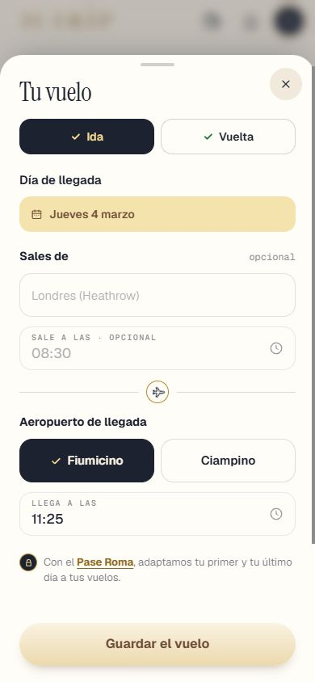
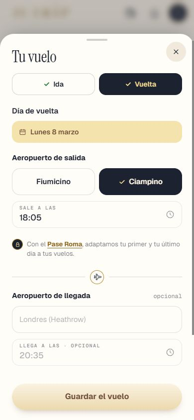
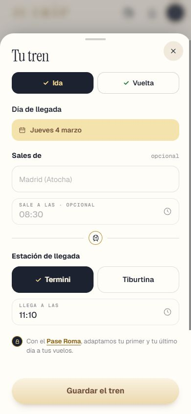
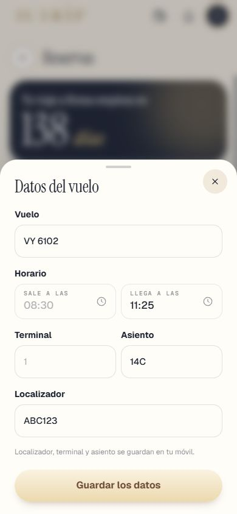
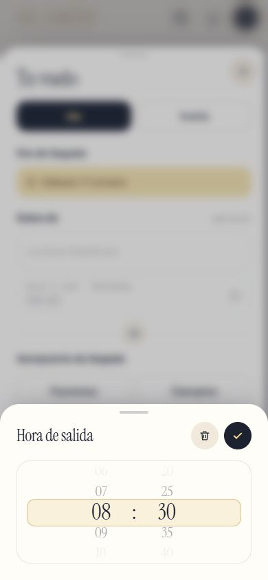
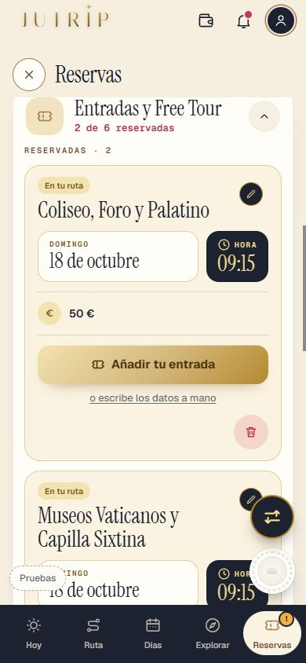
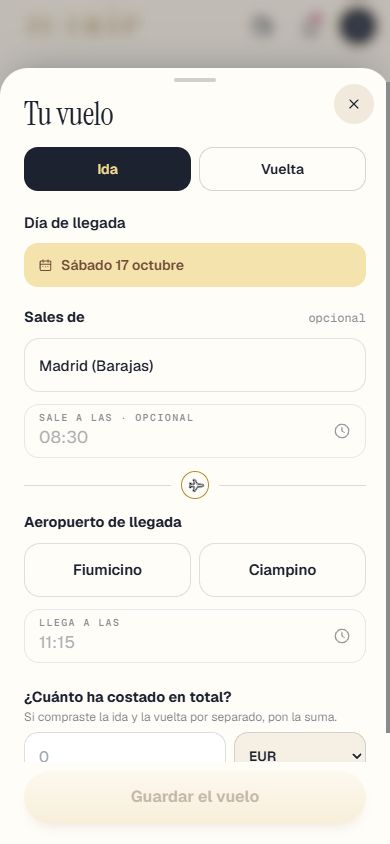

Repaso de la Tanda 10S6
La batería de pruebas en 0 fallos de una pasada (tres veces seguidas y en 35 minutos), la descarga más ligera, las zonas de toque de 44 px y los retoques de la 10N12. Marca cada punto en tu teléfono cuando lo hayas comprobado (se guarda en este navegador).
0 · Antes de empezar ✅ Hecho — Prompt guardado, Design al día (Entradas Lista, Reorganizar, Entradas Billete, Pase Lista), nota de estado cada 30 minutosCambio de Eric durante la tanda: la rueda de la hora solo en la hoja del vuelo. La carpeta docs/diseno/proyecto/uploads no se ha subido. Dónde: No es de móvil. 1 · La hoja del vuelo, más limpia ✅ Hecho — «Sales de»: un solo aeropuerto, relleno («Barcelona (El Prat)»); varios, vacío con el ejemplo en gris («Londres (Heathrow)»); con tren, estacionesLas estaciones de ejemplo (Atocha, Sants, Termini…) son una tabla corta mía de 13 ciudades en aeropuertosCiudad.ts. Dónde: RESERVAS > Llegada y vuelta > Cambiar en la ida. 
✅ Hecho — «Sale a las · opcional» sin hora: hora de ejemplo en gris con el reloj, sin rayaDónde: Hoja del vuelo, ida y vuelta. 
✅ Hecho — «Aeropuerto de llegada» y «Aeropuerto de salida» (tren: «Estación de…»; barco: «Puerto de…»)Autobús usa la misma lógica que el tren; no se probó con navegador. La hoja del invitado usa la misma hoja; no se comprobó con navegador. Dónde: Hoja del vuelo, ida y vuelta; viaje en tren. 
✅ Hecho — La línea del pase con 10 px más arriba y 10 px más abajoMedido. En la VUELTA la línea queda en medio, bajo «Sale a las», como pidió la 10S3: no la moví porque el prompt no decía dónde ponerla. Dónde: Hoja del vuelo, sin pase. ✅ Hecho — Fuera las cinco casillas (Ref. vuelo, Aerolínea, Localizador, Terminal, Asiento) y la línea «Solo lo ves tú…»; lo guardado no se pierdeEsos datos se cambian en la tarjeta del billete de RESERVAS: antes solo se podían cambiar volviendo a leer el archivo, así que añadí lo mínimo, un enlace «Cambiar los datos» que abre una hoja con esas casillas. La tarjeta «Tu tarjeta de embarque · Cambiar el archivo» pasó justo bajo el título. Dónde: RESERVAS > tarjeta del billete > Cambiar los datos. 
✅ Hecho — Fuera «¿Llegas o te vas otro día? Cambia las fechas del viaje»; tras la línea del pase, directamente «¿Cuánto ha costado en total?» y [Guardar el vuelo]Así queda en la ida; en la vuelta, ver arriba. Dónde: Hoja del vuelo. 2 · Elegir una hora, siempre igual ⚠️ A medias — La rueda de la hora desde abajo, en su propia hoja, con ✓ y papelera arriba a la derecha; tocar fuera también guarda la horaPor tu cambio, SOLO en la hoja del vuelo (administrador e invitado, tren, autobús y barco). Las demás ruedas (entradas, Free Tour, excursiones…) se quedan como están. La hoja «Añadir gasto» no tiene ninguna hora. Regla escrita («por ahora solo en el vuelo»). Componente compartido: src/components/ui/HojaDeHora.tsx. Dónde: Hoja del vuelo > tocar una hora. 
3 · Entradas y Free Tour como Design ✅ Hecho — «Reservadas» arriba (✓, día, hora, precio, «Cambiar») y «Por reservar» debajo ([Reservar entrada] y «¿Ya la tienes? Añádela»), sin el botón del códigoLas miniaturas son un degradado con rayas, como Design: los datos de las entradas no traen foto del sitio. Dónde: RESERVAS > Entradas y Free Tour. 
✅ Hecho — Sin «Ver n más», con [Añadir otra reserva]; fechas enteras («En tu ruta · Lunes 19»); lo de la 10S4 sigue igualDónde: Final del bloque abierto. 
4 · La cabecera del alojamiento ✅ Hecho — Sin línea bajo el título del bloque del alojamientoYa estaba sin ella: solo se añadieron comprobaciones. Sin captura (no cambia). Dónde: RESERVAS > Alojamiento, cerrado y abierto. 5 · La prueba ✅ Hecho — pruebaTanda10S6 (N, O, P) y las antiguas tocadas, más pruebaJutripSin migraciones. Dónde: No es de móvil. Todas las capturas
10s_aviso_375x667 10s_cama_dia_de_prueba 10s_lista_x_375_final 10s_lista_x_final 10s_lista_x_medio 10s_mis_viajes_fechas 10s_toque_ajustes_antes 10s_toque_ajustes_despues 10s_toque_cama_antes 10s_toque_cama_despues